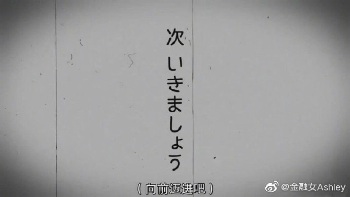

这是两个阶段的事情啊。阶段一，做好自己，阶段二，找到同类。"人生而孤独，做好自己，找到同类就已然是很好的人生了。"
@那个艾什丽:
#人生进阶# 找到自己的人生圈子
人真正的成熟和踏实，往往是伴随着找到属于自己的人生圈子的节奏而来的。
其实很多人直到三十而立甚至更晚，才慢慢接纳自我，并且明白人生而孤独，做好自己，找到同类就已然是很好的人生了。
我们的文化教育我们从小需要合群。古语说“君子和而不同”，都教会人们虽然你内心有自己的坚持也仍然可以保持表面的和平。
就这样和大集体拉拉扯扯到成年。逐渐发现人与人的不同有时候甚至大到了类似物种的差别。
忙于生计穿梭于楼宇红红火火的顺丰小哥，需要和装逼打卡为了拍照省吃俭用的后浪混同在一起吗？
擅长于现实的拼杀披头散发极尽所能落地一件事的务实主义者，也没办法和西装革履金丝眼镜红酒雪茄的职业经理人一起在各种“场面上”谈笑风生。
喜欢家庭热爱后代珍视伴侣的群体，也并不懂得那些骂他们“婚驴”、鄙视他们“做低伏小的群体到底经历过什么。
有能力又有文笔在网络上发声的毕竟是少数，能够条理清晰剥丝抽茧形成理论并且汇聚拥趸的就是顶尖。这些意见领袖的珍贵在于，让你看到原来你并不孤独，之后不需要继续孤独。
人生到了一个时点应该花大力气，去找到自己的人生圈子，因为和与自己同频的人在一起是如此幸福和快乐。
这种踏实快乐轻松不需为外人道。以前那些为了融入、合群而表演的“社交礼仪”随着越来越珍贵的精力，越多的因为自己内在坚持和认可囤积下来可以傍身的自我确认感及阅历沉淀成形。
就像年轻人常常发问：“做自己能不能成功？"
当然可以，但需要付出真实努力。
你要努力找到属于你的圈子，找到那些把热爱，把自我完完全全发挥到极致，为了内心的坚持和认可付出巨大行动，得到最大满足的人是怎样生活的。
那才是人生的正确打开方式，是你应该灼热紧盯的人生视野。这也才会是你真正的灯塔，而不是主流世界妄图灌输的东西。
去找到属于你的圈子，去体验“不是因为看起来很美而被喜欢，而是因为我们是同类而懂得。"的感觉。
这样，人生的快乐，才会降临。
人真正的成熟和踏实，往往是伴随着找到属于自己的人生圈子的节奏而来的。
其实很多人直到三十而立甚至更晚，才慢慢接纳自我，并且明白人生而孤独，做好自己，找到同类就已然是很好的人生了。
我们的文化教育我们从小需要合群。古语说“君子和而不同”，都教会人们虽然你内心有自己的坚持也仍然可以保持表面的和平。
就这样和大集体拉拉扯扯到成年。逐渐发现人与人的不同有时候甚至大到了类似物种的差别。
忙于生计穿梭于楼宇红红火火的顺丰小哥，需要和装逼打卡为了拍照省吃俭用的后浪混同在一起吗？
擅长于现实的拼杀披头散发极尽所能落地一件事的务实主义者，也没办法和西装革履金丝眼镜红酒雪茄的职业经理人一起在各种“场面上”谈笑风生。
喜欢家庭热爱后代珍视伴侣的群体，也并不懂得那些骂他们“婚驴”、鄙视他们“做低伏小的群体到底经历过什么。
有能力又有文笔在网络上发声的毕竟是少数，能够条理清晰剥丝抽茧形成理论并且汇聚拥趸的就是顶尖。这些意见领袖的珍贵在于，让你看到原来你并不孤独，之后不需要继续孤独。
人生到了一个时点应该花大力气，去找到自己的人生圈子，因为和与自己同频的人在一起是如此幸福和快乐。
这种踏实快乐轻松不需为外人道。以前那些为了融入、合群而表演的“社交礼仪”随着越来越珍贵的精力，越多的因为自己内在坚持和认可囤积下来可以傍身的自我确认感及阅历沉淀成形。
就像年轻人常常发问：“做自己能不能成功？"
当然可以，但需要付出真实努力。
你要努力找到属于你的圈子，找到那些把热爱，把自我完完全全发挥到极致，为了内心的坚持和认可付出巨大行动，得到最大满足的人是怎样生活的。
那才是人生的正确打开方式，是你应该灼热紧盯的人生视野。这也才会是你真正的灯塔，而不是主流世界妄图灌输的东西。
去找到属于你的圈子，去体验“不是因为看起来很美而被喜欢，而是因为我们是同类而懂得。"的感觉。
这样，人生的快乐，才会降临。
- 